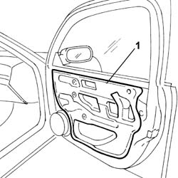

7005A04 Front side door WATER GUARD PROTECTION -R R. or Postion with door panel removed
- Path
- Procedures > 70 FITTINGS > 7005 passenger compartment front side doors > 7005A FRONT DOOR ASSEMBLY > 7005A04 Front side door WATER GUARD PROTECTION -R R. or Postion with door panel removed
- Kind
- repair procedure (removal / refitting; the operation number is the code)
- Applies to
- all engines; all production periods
- Interactive page
- https://sloeber94.github.io/elrnDB-lThss/en/#/79803
Applies to: all engines; all production periods
 Removing
Removing
 Refitting
Refitting1. Detach the protective water shield and remove it.

Applies to: all engines; all production periods
Refitting
Removing- Check that the new protection is intact and not torn.
- Clean the surface of the bodyshell involved thoroughly using heptane.
- Position the new water shield, taking care to ensure that the adhesive sticks to the door frame.
Topics that link to this page (13)
- 5505B11 FRONT DOOR built in WIRING (one) left or right - R.R.
- 7005A05 Front side door WATER GUARD PROTECTION - R.R. or Position
- 7005A28 Front side DOOR LIMITER - R.R.
- 7005C10 Front door OUTER HANDLE - R.R. with door panel removed
- 7005C11 Front side door EXTERIOR HANDLE - R.R.
- 7005C15 Front side door LOCK BARREL (in handle) - R.R.
- 7005C56 Front door opening device (one), left or right, complete with rod lock - R.R. with door panel removed
- 7005C57 Front door opening device (one), left or right, complete with rod lock - R.R.
- 7005D14 front side door descending window glass (one), left or right - r r with door panel (and mount frame) removed
- 7005D15 front side door descending window glass (one), left or right - r r
- 7005D33 Front side door descending window glass door inner guide channel (one), left or right - r r
- 7005M21 Left or right front door electric WINDOW - R.R.
- 7005N21 Central locking MOTOR/LOCK ASSEMBLY for one front door, left or right - R.R.